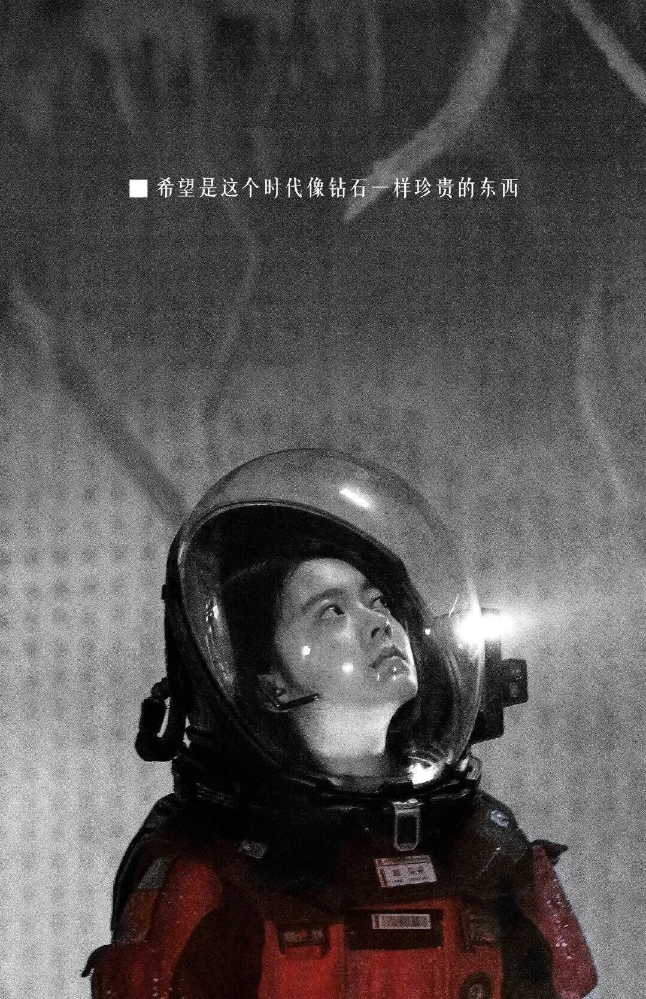
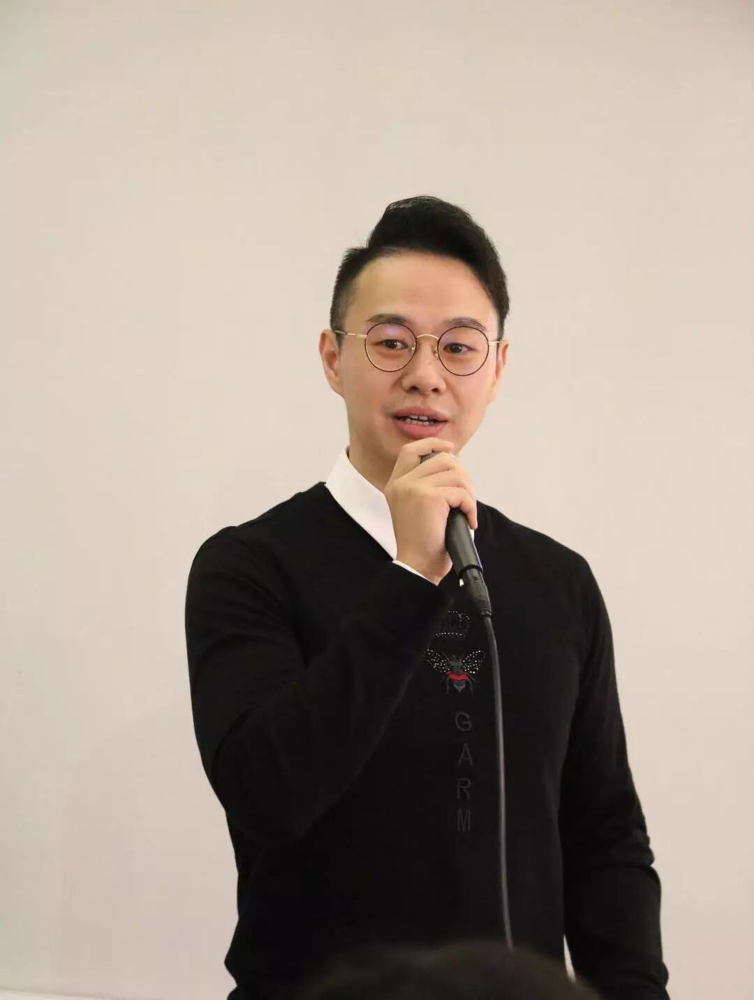

收件人：全体帅锅镁铝
主题：第240次头马会议《Hope》&大咖分享
通知：明天晚上我们在 别的意思~
另外！！！重点是！！！这一周，我们将迎来一位大咖！！！他是 Area D4 director，他是FM Toastmasters IPP，他也是TTT 项目专家反馈组组长。
他，他， 他，他究竟是何方神圣？
他就是 Mason Wang！！！（还愣着干什么，赶紧给我鼓掌啊）

Mason这次为北航头马分享的大致内容是备稿演讲和即兴演讲的区别，以及如何做好即兴演讲。我们知道，即兴演讲要求演讲者在20S内做出一场2min的演讲，这看起来简直impossible！也正是如此，小编我至今不敢举手上台... 我相信很多人和我一样，不知道如何做一场即兴演讲，但是这一次，有大咖指路，期待一哈~
你还在等什么？赶紧来参加我们的会议吧~
时间：2019.4.12 (周五) 19：00-21：00
地点：北航新主楼，B204教室
祝好
——周杰伦
图片|吴政辰
编辑|吴政辰
审核|吴辉阳